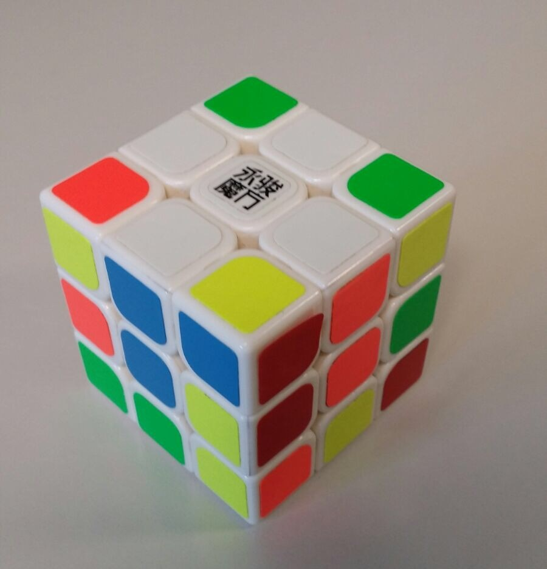
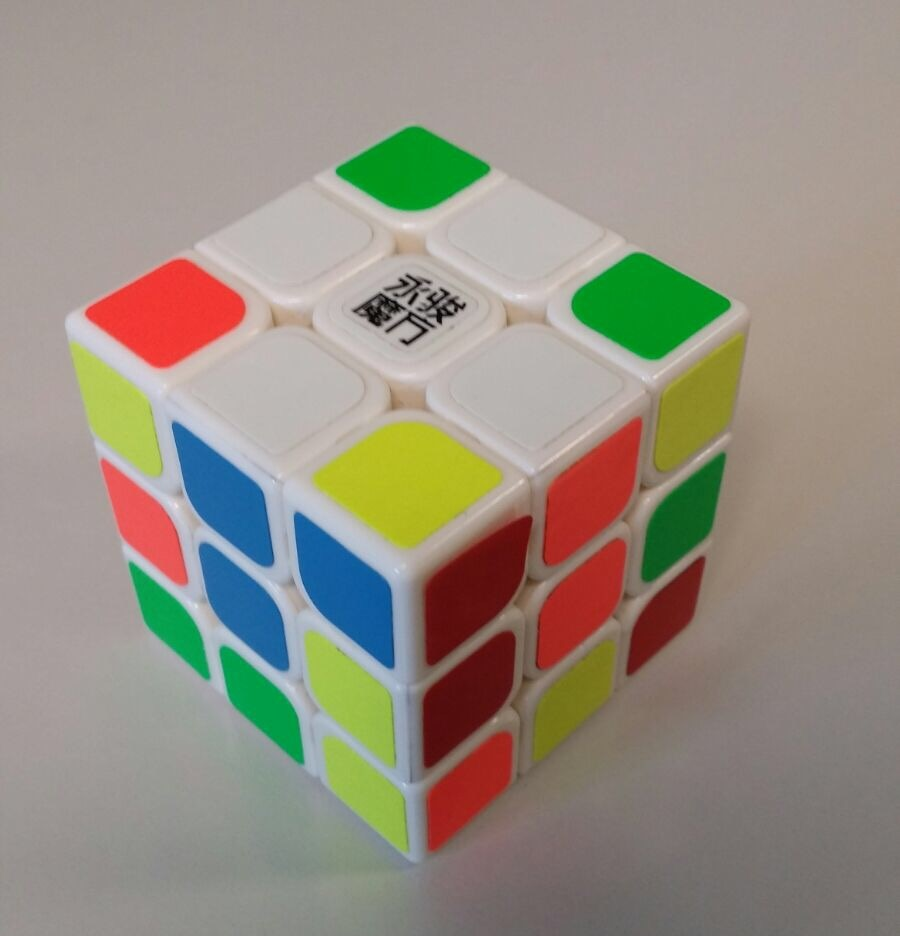

Faire une croix
Dans cette partie il va falloir faire la croix blanche, il faudra aussi faire attention a que les arêtes touchent le coté blanc et le coté de sa couleur.
Dans cette partie il va falloir faire la croix blanche, il faudra aussi faire attention a que les arêtes touchent le coté blanc et le coté de sa couleur.
